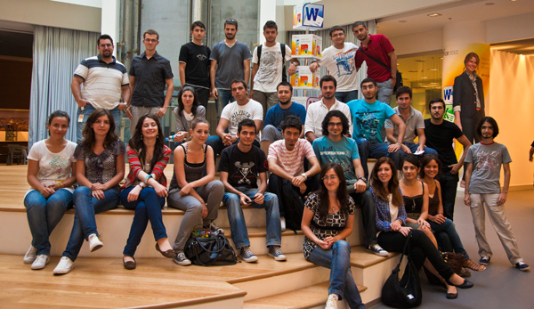

Microsoft Yaz Okulu 2010 - İstanbul
August 23, 2010 Merhabalar, bu yıl benim de katılımcı olarak yer aldığım Microsoft Yaz Okulu programının ardından yorumlarımı paylaşmak istedim. Programdan önce benim de merak ettiğim, sıkça sorulan sorular hakkında kendi fikirlerimi belirtmek istiyorum.
Microsoft Yaz Okulu bir staj programı mıdır?
Hem evet, hem hayır diyebilirim. Uygulamalı eğitimler ve staj projesinden oluşan Microsoft Yaz Okulu programı bir stajda edinilebilecek deneyimden fazlasının elde edilebileceği bir yerdir ve çoğu üniversitede staj olarak sayılmaktadır.
Katılım ücretli mi, kabul edilmek zor mu?
Katılım ücretsiz. Bunun dışında öğlen yemekleri de oldukça güzel ve ücretsiz. Çay, kahve, ice tea, kola gibi içecekler de ücretsiz. Ayrıca usb bellek, cd çantası ve çok sayıda kitap gibi hediyeler de bulunmakta. Kabul edilme oranı ise bu sene %5 civarı.
Microsoft Yaz Okulu kimlere hitap ediyor?
Katılımcılar genel olarak bilgisayar mühendisliği öğrencilerinden oluşmakta. Bunun dışında diğer bölümlerden katılımcılar da var. Eğitimler genelde giriş seviyesinde oluyor ancak konular hızlandırılmış olarak işlendiğinden biraz ön bilgisi olan katılımcılar için daha faydalı bir program diyebilirim.
Microsoft Yaz Okulunun katılımcılara ne gibi katkıları oluyor?
Microsoft Yaz Okulu, teknik anlamda gelişme fırsatı sağlamanın yanı sıra sosyal gelişime de katkıda bulunan bir program diyebilirim. Farklı üniversitelerden katılımcıların bulunduğu bu program güzel arkadaşlıkların kurulabileceği bir çalışma ortamı sağlıyor. Değerli kazanımların elde edildiği programda, Microsoft'un Most Valuable Professional ünvanını verdiği, alanında uzman kişiler ile tanışma imkanı elde ediliyor. Microsoft Yaz Okulu genel olarak öğrenciler için verimli ve keyifli bir staj dönemi olarak geçiyor ve program sonunda öğrencilere Yaz Okulu Katılım Belgesi veriliyor.
Eğitimlerde hangi konular işleniyor?
Bu seneki programda ana başlıklar:
- 26-27 Temmuz: Windows Server 2008 R2 - Muammer Benzeş
- 28-30 Temmuz: SQL Server 2008 R2 - Hakan Ulagan
- 2-3 Ağustos : C# - Sefer Algan
- 4 -6 Ağustos: ASP.NET & Silverlight - Daron Yöndem
- 9 -10 Ağustos : XNA GS - Engin Yıldız
- 11 Ağustos: Sharepoint - Evren Ayan
- 12-13 Ağustos: Windows Embedded -Umut Yeşilmen
- 16 Ağustos: Windows Phone - Ekin Özçiçekçiler
- 17-20 Ağustos: Staj Bitirme Projesi
Staj